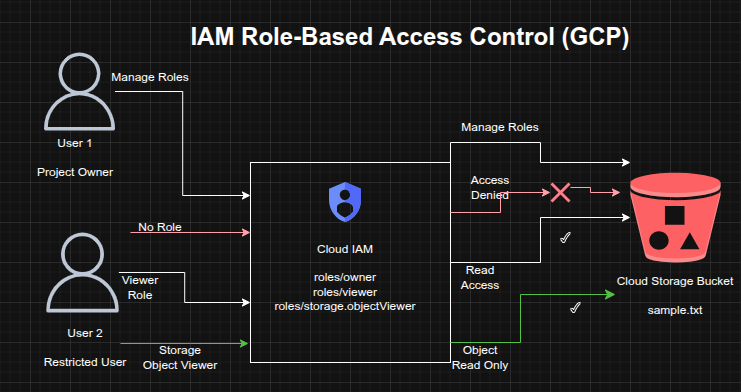

IAM Access Control Validation and Role-Based Storage Access on GCP
IAM Access Control Validation and Role-Based Storage Access on GCP
Timeline: December 2025
Role: Cloud Security Engineer
Skills: Google Cloud IAM, Role-Based Access Control (RBAC), Cloud Storage, Access Validation, Least Privilege, Permission Troubleshooting
Project Summary
This project focused on validating role-based access control (RBAC) on Google Cloud by testing how different IAM roles affect visibility and permissions across project resources. The implementation used two identities to simulate an administrator and a restricted user, then exercised the full lifecycle of granting, revoking, and scoping access.
The project demonstrated how Google Cloud IAM can be used to enforce least-privilege access, moving from broad project-level permissions to narrowly scoped service-level permissions for Cloud Storage objects.
Objectives
- Examine the behavior of Google Cloud basic project roles
- Validate the difference between project-level and service-level access
- Create a Cloud Storage bucket and object for permission testing
- Revoke broad access from a secondary user
- Re-grant limited access using a storage-specific IAM role
- Verify access behavior before and after role changes
Architecture Overview
The architecture consisted of:
- A Google Cloud project owner identity with permission to manage IAM policies
- A secondary user initially assigned the Project Viewer role
- A Cloud Storage bucket containing a sample object for access testing
- IAM policy changes that removed project-level access and replaced it with a narrower Storage Object Viewer role
- Validation of access through both the Google Cloud Console and Cloud Shell

Implementation & Highlights
1. IAM Role Exploration
- Signed in with two separate identities to compare access behavior
- Verified that the administrative identity had Project Owner permissions
- Confirmed that the secondary identity had Project Viewer permissions and could not manage IAM policy
2. Cloud Storage Resource Setup
- Created a Cloud Storage bucket with a globally unique name
- Uploaded a sample file (
sample.txt) to the bucket - Used the bucket as the test resource for validating access changes
3. Validation of Project Viewer Access
- Verified that the secondary user could see the Cloud Storage bucket through the Console
- Confirmed that project-level read access enabled resource visibility without modification privileges
4. Revocation of Broad Project Access
- Removed the Project Viewer role from the secondary identity
- Confirmed that the user lost access to project resources
- Observed permission-denied behavior after IAM policy propagation completed
5. Reassignment of Least-Privilege Permissions
- Granted the secondary identity the Storage Object Viewer role instead of restoring project-wide access
- Scoped access specifically to Cloud Storage object viewing
- Demonstrated the shift from broad permissions to targeted service-level authorization
6. Access Verification and Troubleshooting
- Used Cloud Shell to validate object-level access with:
gsutil ls gs://[BUCKET_NAME]
- Confirmed that the secondary identity could list the object in the bucket while still lacking broader project visibility
- Verified the practical effect of least-privilege IAM design
Design Decisions
- Used two identities to simulate real-world administrative and restricted access patterns
- Tested both project-level primitive roles and service-specific IAM roles
- Removed unnecessary broad access before reassigning narrowly scoped permissions
- Used Cloud Storage as a controlled resource for validating permission boundaries and policy behavior
Results & Impact
- Successfully demonstrated the difference between broad project visibility and scoped service access
- Validated that removing the Project Viewer role fully revoked project-level access
- Confirmed that assigning Storage Object Viewer restored only the required level of access
- Strengthened practical understanding of:
- IAM policy enforcement
- role scoping
- permission propagation
- least-privilege access design
Tools & Technologies Used
- Google Cloud IAM – Role assignment and access control
- Cloud Storage – Resource used for permission validation
- Cloud Console – IAM and resource visibility testing
- Cloud Shell / gsutil – Command-line access validation
- RBAC Principles – Controlled access design
Outcome
This project demonstrates the ability to implement and validate least-privilege access control on Google Cloud using IAM. It highlights practical skills in granting and revoking roles, testing permission boundaries, and replacing broad access with narrowly scoped service permissions, all of which are directly relevant to cloud security engineering and identity governance.